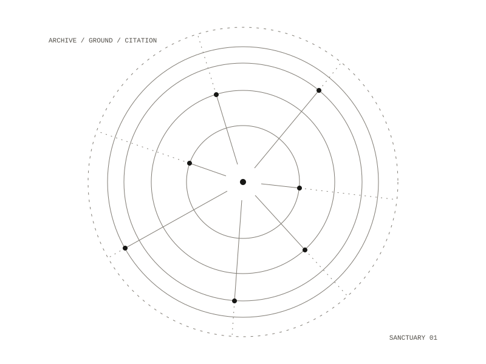

Sanctuary Cell Division
A walk-up screen that answers only from what the room has been given. Visitors offer something through a code on the wall, and choose: seen by everyone, held with reverence, or sealed. Every answer names what it could not read. Beside it, The Rev ministers, and keeps nothing.

The offering
Scan the code on the wall and choose what should happen to what you bring.
- Seen by everyone. It joins the commons: it appears on the screen in the room, and on the gallery page, which anyone can read.
- Held with reverence. Only the reverends see it. It is never shown: it is kept, and space is held for it.
- Sealed. The room counts that you gave something and never sees what.
The one rule
Every answer names what it could not read, beside every answer, every time, including when the answer is good. There are three kinds of absence and they are not the same kind. Sealed things can be counted but never read. A photograph or recording is known to have arrived, and of what kind. Things held with reverence the screen cannot see or count at all: an absence the system cannot even count is a better ghost than one it can.
The Rev
The minister of the piece, on a small touchscreen in the room. Ask it for a blessing and the answer is a blessing, not a description of one. It marks thresholds, gives rites, prays with someone who asks, and companions. It may compose a rite that has never existed; it may never present something it composed as inherited tradition. It belongs to the work and to no one person in it.
It keeps nothing: no memory between visits, no transcript, no name on disk, no logs. It runs on one Raspberry Pi 5 in the room. Pull the network cable and the conversation carries on.
one Raspberry Pi 5 in the room
Offline in ordinary operation